What time is it?
It's Peanut Butter Jelly Time!!!
It's Peanut Butter Jelly Time!!!
Peanut Butter Jelly Time is a Flash animation that first emerged at the early early part of this century and quickly became an Internet phenomenon. The animation is based on a song of the same name recorded by DJ Chipman of the Buckwheat Boyz. The best known version of the animation which can be seen above shows a highly pixelated Dancing Banana moving back and forth to the song's chorus.
The Dancing Banana (also known as Peanut Butter Jelly, or Humba the Banana) is a popular emoticon . In 2001 the Dancing Banana was used on several forums as a standard emoticon. Most forums would replace the text :banana: with the gif animation. More emoticon examples can be found below.


 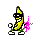
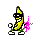


 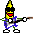
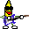

 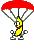
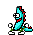
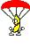
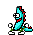

 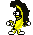
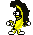
 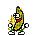
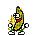


 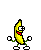
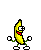


 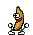
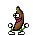
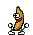
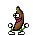


 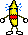
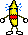


 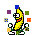
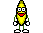
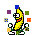
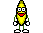


 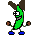
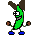


 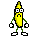
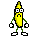


 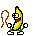
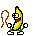
 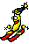
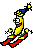
 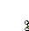
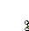

 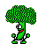
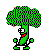


 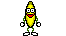
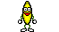